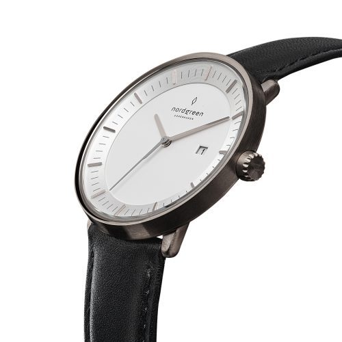

Q1.時計は時間を知る物ためだけの物である
Q2.誕生日は祝われるより祝う方が好き
Q3.自分はインドア派よりアウトドア派
Q4.朝食は毎日ちゃんと食べるほうである
Q5.時計をつけるなら重たい物より軽い物の方がいい
ケースの素材に、シチズン独自の「スーパーチタニウム」を採用しているビジネスウォッチ。軽さや肌触りのよさが特徴で、ステンレスより高い強度を併せ持っています。大きく施されたベゼルにデュアル球面サファイアガラスを組み合わせ、気品の高さを演出しています。太陽光や蛍光灯などのわずかな光を電気に換える「エコドライブ」を搭載。40ものタイムゾーンをカバーするGPS衛星電波も備えています。デザイン性・機能性・省エネ性の3つを兼ね備えているアイテムです。

ビジネスの場では常に誠実さと、落ち着いた物腰が好まれます。この時計はブラックの革ベルトを採用しており、スーツにしっかりと馴染む腕時計となっています。クオーツ式の日本製ムーブメントを搭載しており、デザインだけでなく品質も優れているのが魅力。ちょっとした水滴に耐えられる3気圧防水性能を備えているのもポイントです。
12時間計をはじめ、3つのインダイアルが搭載されているビジネス用腕時計。日本と世界の2都市の時刻を同時に確認できます。北米やヨーロッパなど世界6局の標準電波が自動で受信可能。サマータイムも自動で設定されます。ボディ側面には電子式のリューズスイッチを搭載。引く、回すといったシンプルな操作で、ワールドタイムの都市変更など、さまざまな設定ができます。海外へよく出張に行くビジネスパーソンにおすすめの製品です。
オリエントスターで初めて月齢機能を搭載した機械式のビジネス用腕時計。時計の文字版に月の満ち欠けが表示されるという機能で、新月から上弦・満月・下弦・新月へと変化します。デザインとしてはもちろん、バイオリズムの指針としても使用可能です。ケースには耐食性の高いステンレススティールを、裏蓋ガラスにはサファイアクリスタルをそれぞれ採用しており、堅牢性は良好。視認性の高い針や扱いやすいリューズが搭載しているため、操作性や利便性にも優れます。長期にわたって使い続けられる1本です。